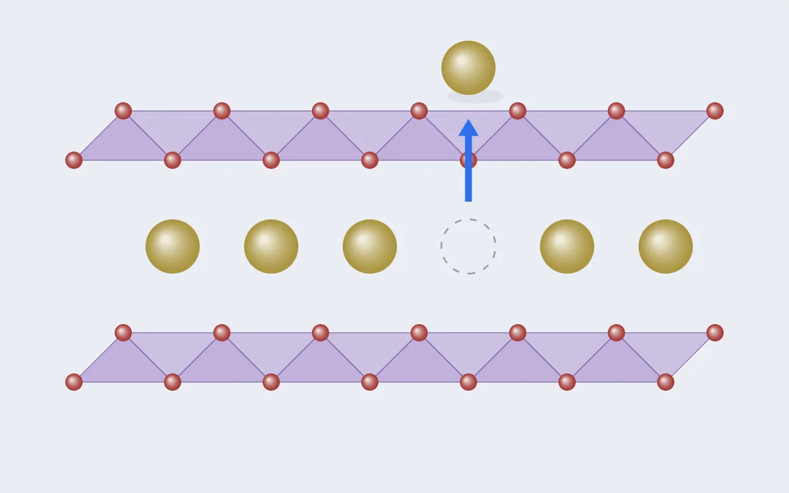

DFT 실습 [6] — Na 하나를 빼서 첫 전압을 얻었다: 2.40 V
실습 [5]에서 진짜 α-NaMnO₂ 구조를 이완해 얀-텔러의 지문까지 확인했습니다. 오늘은 그 구조로 처음으로 물성을 예측합니다. 배터리를 충전한다는 것은 양극에서 Na를 빼낸다는 것이고, 그때의 에너지 변화가 곧 전압입니다. 계산 세 개를 이어 붙여 나온 첫 숫자는 2.40 V였습니다. 그리고 그 숫자에 도달하는 동안, 전하가 두 Mn 사이에서 자리를 나눠 갖는 장면을 자리 단위로 봤습니다.

0. 전압은 에너지 차이다
충전 반응을 계산의 언어로 쓰면 이렇습니다. 원래 구조에서 Na 하나가 빠져나와 음극의 Na 금속이 됩니다.
Na₂Mn₂O₄ (양극) → NaMn₂O₄ (양극) + Na (금속)
V = [ E(NaMn₂O₄) + E(Na 금속, 원자당) − E(Na₂Mn₂O₄) ] / e전자 하나가 이동하니 에너지 차이(eV)가 그대로 전압(V)이 됩니다. 필요한 계산은 세 개인데, 첫째(원래 구조)는 실습 [5]의 2차 이완 결과가 이미 있습니다. 남은 것은 Na를 뺀 구조와 Na 금속입니다. 셋 다 ENCUT, POTCAR, U가 같아야 한다는 것이 절대 조건입니다. 전압은 에너지의 차이이고, 실습 [4]에서 본 것처럼 다른 세팅의 에너지끼리는 같은 자로 잰 값이 아니니까요.
1. Na 빼기와 대칭 깨기
실습 [5]에서 수렴시킨 구조에서 Na 하나만 지웠습니다. pymatgen으로 한 줄입니다. 이 8원자 셀에는 Na 자리가 두 개인데 대칭적으로 같아서, 어느 쪽을 빼도 같은 구조가 됩니다. 빈자리 배열을 고민하지 않아도 되는 좋은 첫 사례였습니다.
s = Structure.from_file("CONTCAR")
na = [i for i, site in enumerate(s) if site.specie.symbol == "Na"]
s.remove_sites([na[0]])
s.to(fmt="poscar", filename="POSCAR") # Na1 Mn2 O4, 원자 7개핵심은 INCAR의 한 줄이었습니다. Na 하나가 빠지면 전하 장부상 Mn 하나가 3+에서 4+로 가야 합니다. 그런데 두 Mn에 같은 초기 모멘트를 주면, 계산은 대칭을 지키려고 "둘 다 3.5가"라는 어중간한 해에 갇힐 수 있습니다. 그래서 초기값을 일부러 다르게 줬습니다.
MAGMOM = 1*0.0 1*4.0 1*3.0 4*0.0 ! Na, Mn(3+ 후보), Mn(4+ 후보), OPaper [1]에서 Wang 외가 Mn₃O₄나 Fe₃O₄ 같은 혼합 원자가 산화물에 이온마다 다른 초기 모멘트를 줬던 바로 그 기법입니다. VASP는 MAGMOM이 다른 자리를 서로 다른 원자로 취급해 대칭을 스스로 낮춥니다. 초기값은 답이 아니라 기회입니다. 대칭을 깨두면 전하가 한쪽에 자리 잡는 해를 찾아갈 수 있는 길이 열립니다.
2. 1차 이완: 갭이 열리는 순간
먼저 부끄러운 이야기 하나. 결과를 보려고 VS Code에서 vasp.log를 열었는데, 첫 줄에
8 ions라고 적혀 있었습니다. Na를 뺀 구조는 7개여야 합니다. 옛
폴더(원래 구조의 1차 이완)의 로그를 열고 있었던 겁니다. 마지막 에너지가 실습 [5]의
값과 소수점 끝자리까지 같아서 금방 알아챘습니다. 폴더가 늘어날수록 이런 실수가
늘어납니다. 새 습관: 로그를 보면 첫 줄의 원자 수부터 확인한다.
진짜 로그는 19번의 이온 스텝 끝에 정상 수렴했습니다. 셀 전체 자기모멘트는 처음부터 끝까지 7.0000. 전하 장부의 예측(Mn³⁺ 4 + Mn⁴⁺ 3 = 7)과 정확히 같습니다. 그런데 로그를 한 줄씩 읽다 보니 더 흥미로운 게 있었습니다.
실습 [5]에서 F = E0를 절연체의 증거로 읽었던 그 눈으로 보면, 이 계산은 처음엔 갭이 완전히 열리지 않은 상태로 시작해서 구조가 움직인 뒤에야 절연체가 됐습니다. 제 해석은 이렇습니다. 처음 구조에서는 두 Mn의 팔면체가 아직 똑같아서, 여분의 전자 구멍이 어느 한쪽에 확실히 자리 잡지 못했습니다. 원자들이 움직이며 한쪽 팔면체가 수축하자 전하가 그 자리에 붙잡혔고, 그제야 갭이 열렸습니다. 전자의 국재화와 구조 변형이 서로를 붙잡아 주는 현상입니다. 아직 가설이지만, 다음 절의 자리별 데이터가 이 해석과 잘 맞습니다.
3. 자리별로 보기: 두 Mn이 다른 이온이 됐다
셀 합계 7은 두 Mn이 3.5씩 나눠 가져도 나오는 숫자라 그것만으로는 부족합니다. 이온별 모멘트와, 실습 [5]에서 만든 10줄짜리 결합 길이 스크립트를 함께 돌렸습니다.
| d 모멘트 (μB) | Mn–O 결합 (Å) | 긴/짧은 비 | 왜곡 지수 | |
|---|---|---|---|---|
| 원래 구조의 Mn (실습 [5]) | · | 4×1.970 / 2×2.436 | 1.24 | 약 1.1×10⁻² |
| Mn#1 (3+ 쪽) | 3.86 | 4×1.986 / 2×2.240 | 1.13 | 약 3.3×10⁻³ |
| Mn#2 (4+ 쪽) | 3.17 | 4×1.939 / 2×1.968 | 1.015 | 약 5×10⁻⁵ |
- Mn#2는 교과서적인 Mn⁴⁺입니다. 모멘트가 3 근처이고 팔면체가 거의 정팔면체입니다. Mn⁴⁺(d³)는 e_g 칸에 전자가 없으니 팔면체를 늘일 이유가 없고, 얀-텔러가 사라질 거라는 예측이 그대로 맞았습니다.
- Mn#1은 여전히 Mn³⁺ 쪽이지만 "온전하지" 않습니다. 4短2長 왜곡이 남아 있긴 한데 길이 비가 1.24에서 1.13으로 줄었고, 모멘트 3.86도 기대보다 낮습니다. 가능한 해석은 두 가지입니다. 전하가 3+/4+로 깔끔하게 나뉘지 않고 부분적으로만 나뉘었거나, 셀이 너무 작아서 생긴 제약이거나. 이 셀에는 Mn이 두 개뿐이라 Mn³⁺ 팔면체가 수축한 Mn⁴⁺ 팔면체와 모서리를 맞대고 있고, 이웃이 쪼그라들면 늘어나고 싶은 쪽도 마음껏 늘어나지 못합니다. 판정은 같은 C2/m 원래 구조의 이온별 모멘트라는 기준값과 비교한 뒤로 미뤄뒀습니다.
- 산소는 조용했습니다. 산소 모멘트가 전부 작은 음수(−0.04, −0.11)라, 이 Na 함량에서는 산소가 아니라 Mn이 산화를 맡았다는 판정도 함께 나옵니다. 제 연구 주제인 산소 산화환원(anionic redox)을 찾는 눈금을, 산소가 관여하지 않는 가장 단순한 경우에서 먼저 영점 조정한 셈입니다.
연구와의 연결
표의 마지막 두 열을 보면 왜곡 지수가 산화 상태를 따라 자리마다 같은 순서로 움직입니다. 1.1×10⁻²(원래 Mn³⁺), 3.3×10⁻³(부분 Mn³⁺), 5×10⁻⁵(Mn⁴⁺). 세 점뿐이지만 "국소 구조 특징이 국소 전자 상태를 읽어낸다"는, 해석 가능한 특징 분석의 전제가 처음으로 데이터에서 나온 겁니다. 고엔트로피 조성에서 수백 개 자리에 이 스크립트를 돌리면 이 관계가 점이 아니라 분포로 보일 겁니다.
4. 2차 이완: Pulay 보정은 부피를 따라 부호가 바뀐다
Na를 뺀 구조는 부피가 4.3% 줄었습니다(90.94 → 87.08 ų). 실습 [5]의 규칙대로 2차 이완을 돌렸고, 1스텝 만에 수렴했습니다. 그런데 에너지를 두 구조 나란히 놓으니 대칭적인 그림이 나왔습니다.
| 1차 최종 (eV) | 2차 (eV) | 2차 − 1차 | 1차의 부피 변화 | |
|---|---|---|---|---|
| Na₂Mn₂O₄ (원래) | −50.773489 | −50.780359 | −6.9 meV | 커짐 (+5.9%) |
| NaMn₂O₄ (Na 뺀 것) | −47.079655 | −47.076213 | +3.4 meV | 작아짐 (−4.3%) |
부피가 커진 쪽은 2차에서 에너지가 내려갔고, 작아진 쪽은 올라갔습니다. 1차 계산은 처음 부피에 맞춰 만든 평면파 세트를 끝까지 씁니다. 셀이 줄어들면 같은 개수의 평면파가 좁은 공간에 몰려 실제로는 해상도가 높아진 셈이라 에너지가 인위적으로 낮게 나오고, 셀이 커지면 반대입니다. 2차 이완이 그 착시를 양쪽 방향 모두에서 걷어낸 겁니다. 전압은 두 에너지의 차이라서, 2차 이완을 건너뛰었다면 두 오차가 같은 방향으로 겹쳐 약 10 meV, 즉 0.01 V가 틀어졌을 겁니다. 작아 보여도 수백 개 조성을 비교할 땐 순위를 바꿀 수 있는 크기입니다.
5. 기준 전극: Na 금속
고백 하나 더. Na를 뺀 구조가 도는 동안 Na 금속 세팅을 받아뒀는데, 판독에 정신이 팔려 실행하는 걸 잊었습니다. 전압을 계산하려는 순간 "Na 금속 계산? 내가 했었나?" 하고 멈췄습니다. 계산이 여러 개 동시에 돌아가기 시작하면, 받은 세팅과 제출한 잡과 끝난 결과를 따로 적어두는 목록이 필요하다는 걸 배웠습니다.
MP에서 가장 안정한 Na 구조를 받았더니 상온의 체심입방(bcc)이 아니라 육방정(hcp, mp-10172)이 나왔습니다. 절대영도 계산에서는 hcp, bcc, 9R이라는 적층 구조가 원자당 1 meV 안쪽으로 거의 같은 에너지라, 전압으로는 0.001 V 수준의 차이입니다. 산화물과 달라진 세팅은 세 가지였습니다.
ISMEAR = 1 ! 금속용 스미어링 (Methfessel-Paxton)
SIGMA = 0.1
ISPIN = 1 ! Na 금속은 비자성
! U 태그 없음: Na에는 d 전자가 없다
KPOINTS: 11 × 11 × 6 ! 금속 규칙: 축 길이 × k ≈ 40k점 규칙이 절연체의 23이 아니라 40인 이유는, 금속은 페르미 준위를 가로지르는 밴드가 있어서 그 경계를 제대로 잡으려면 훨씬 촘촘하게 샘플링해야 하기 때문입니다. 실습 [3]에서 k가 부족하면 물리가 깨지는 걸 봤는데, 금속은 그게 더 쉽게 일어납니다. U를 걸지 않아도 되는 이유도 짚어둘 만합니다. U는 Mn에만 걸려 있었으니 Na 금속에서는 GGA와 GGA+U가 사실상 같은 계산이고, 그래서 이 전압 계산에는 이론 [3]의 "에너지 호환" 청구서가 날아오지 않습니다. 반대로 ENCUT 520과 POTCAR(Na_pv)는 산화물과 반드시 같아야 합니다.
계산은 1스텝 만에 끝났고 부피는 그대로였습니다. F와 E0의 차이는 원자당 0.07 meV로 SIGMA도 적절했습니다. 원자당 에너지는 −1.30822 eV.
덤으로 얻은 단서 하나. Na 금속은 MP 구조가 우리 세팅에서 전혀 움직이지 않았는데, NaMnO₂는 6%나 부풀었습니다. 같은 세팅, 같은 POTCAR인데 이렇게 갈리는 건 MP가 두 물질의 구조를 서로 다른 범함수로 이완해 실었을 가능성과 잘 맞습니다. 실습 [5]에서 세운 가설에 한 표가 더해졌고, 확정은 범함수 비교 때 하기로 했습니다.
6. 결과: 2.40 V
| 항목 | 값 (eV) |
|---|---|
| E(NaMn₂O₄), Na 뺀 구조 (2차 이완) | −47.076213 |
| E(Na), 금속 원자당 | −1.308221 |
| E(Na₂Mn₂O₄), 원래 구조 (2차 이완) | −50.780359 |
| V = [−47.076213 − 1.308221 + 50.780359] / 1 | 2.396 V |
연구 0호 데이터
α-NaMnO₂ → Na₀.₅MnO₂ 평균 전압 ≈ 2.40 V (PBE+U, U = 3.9 eV, FM, 8원자 셀)
수렴 테스트로 동결한 세팅, DB에서 받은 진짜 구조, 2단 이완, 대칭 깨기, 기준 전극. 지난 한 달 넘게 따로따로 만든 부품이 처음으로 한 줄로 이어져 나온 숫자입니다.
7. 이 숫자를 얼마나 믿을 수 있나
실험에서 α-NaMnO₂의 충전 곡선은 대략 2.5~3 V대에서 시작하는 것으로 알려져 있어, 2.40 V는 그럴듯한 범위지만 낮은 쪽일 가능성이 있습니다. 정확한 실험값은 Ma, Chen, Ceder의 단사정 NaMnO₂ 전기화학 논문(J. Electrochem. Soc., 2011)과 대조할 예정입니다. 차이가 난다면 후보 원인은 오늘 이미 목록에 있습니다.
- 자기 배열. 두 구조 모두 두 Mn의 스핀을 같은 방향(FM)으로 가정했지만, 실제 α-NaMnO₂는 반강자성(AFM)으로 알려져 있습니다.
- 셀 크기. Mn 두 개짜리 셀이라 Na 빈자리 배열이 한 가지로 강제됐고, §3의 불완전한 전하 분리도 이 제약 때문일 수 있습니다.
- 범함수. U = 3.9 eV를 쓴 PBE+U 자체의 오차. r2SCAN과의 비교 대상입니다.
이 세 가지가 나중에 하이스루풋 프로토콜을 정할 때 "어떤 가정이 전압을 얼마나 흔드는가"라는 방법론 섹션이 됩니다. 한 점을 찍었으니, 이제 가정을 하나씩 바꿔가며 그 점이 얼마나 움직이는지 잴 수 있게 됐습니다.
이날 배운 것들
- 전압은 세 계산의 에너지 차이다. 그래서 ENCUT, POTCAR, U는 셋 모두에서 같아야 하고, 하나라도 다르면 숫자 전체가 무너진다.
- 초기값은 답이 아니라 기회다. 혼합 원자가에서는 MAGMOM으로 대칭을 깨야 전하가 한 자리에 붙잡히는 해를 찾아갈 수 있다.
- F − E0는 스텝마다 읽을 수 있는 갭 탐지기다. 이번엔 구조가 움직인 뒤에야 갭이 열리는 장면을 봤다.
- 합계보다 자리별이다. 셀 모멘트 7은 3.5 + 3.5로도 나온다. 이온별 모멘트와 결합 길이가 두 Mn이 다른 이온이 됐음을 보여줬다.
- Pulay 보정은 부피 방향을 따라 부호가 바뀐다. 커진 셀은 내려가고 줄어든 셀은 올라간다. 두 번 이완하지 않으면 두 오차가 전압에서 겹친다.
- 로그 첫 줄의 원자 수를 먼저 본다. 받은 세팅, 제출한 잡, 끝난 결과는 따로 적는다. 계산이 여러 개가 되면 사고는 물리가 아니라 관리에서 난다.
다음. §7의 세 가정 중 가장 가벼운 것부터 시험합니다. 두 Mn의 스핀을 반대로 놓은 AFM 배열로 같은 계산을 반복해, 자기 배열 가정 하나가 전압을 얼마나 움직이는지 재는 것. 하이스루풋에서 FM으로 통일해도 되는지에 대한 첫 근거가 됩니다.

Seok
연구하면서 개발합니다. 배터리 재료를 원자 단위에서 계산하는 법을 바닥부터 배우는 중입니다. → 글 더 보기